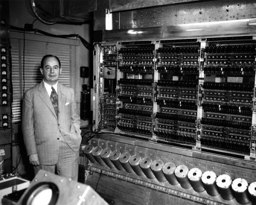

Les différents sites que j'ai utilisé pour la réalisation du projet :
Couleur de fond et d'écriture
Validateur code css
Validadeur code html
Couleur de fond et d'écriture n°2
Notions propres à l’assembleur
Apprendre l'assembleur
Vidéo sur l'histoire du langage assembleur
Apprentissage du langage html et css
Institut de Genech
